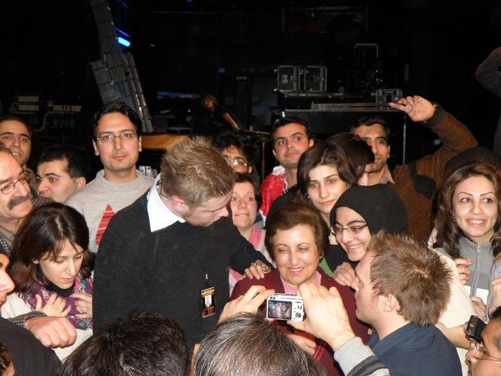

|
|
دو گزارش از سخنراني شيرين عبادي در دانشگاه تروندهايم نروژ
چهار شنبه7 اسفند 1387
مطلبي كه از نظر مي گذرانيد گزارشي است از آنچه در روز سه شنبه بيست و چهارم فوريه 2009 در سالن اجتماعات انجمن صنفي دانشگاه از ساعت 8 نيم شب تا يازده و اندي رخ داد. گزارشي از سخنراني شيرين عبادي.

ديروز سه شنبه شب همزمان با چهارمين شب از آغاز بزرگترين جشنواره دانشجويي در جهان كه ذكر آن قبل تر در اينجا رفته است شيرين عبادي فعال زن و حقوق بشر و برنده جايزه صلح نوبل در سال 2003 در تالار اجتماعات انجمن صنفي دانشگاه تروندهايم نروژ سخنراني اي با عنوان قدرت بخشي به زنان انجام داد. بليت هاي اين مراسم از ده ها روز قبل پيش فروش شده بود اما با اين وجود ساعتي قبل از برگزاري مراسم نيز بليت ها پشت درهاي اين مجموعه فروخته شد. جمعيتي بالغ بر چهارصد الي 500 نفر در سالن و بر روي سكو ها و صندلي ها حضور بهم رسانيدند. نكته جالب در اين ميان شركت بيش از 50 ايراني مشتمل بر دانشجويان ، پناهندگان و افراد مقيم شهر تروندهايم و ساير شهرهاي نروژ در اين مراسم بود. حتي يكي دو تن از دانشجويان دانشگاه تهران نيز در اين برنامه حضور داشتند. اين مراسم توسط دوربين هاي خبرگزاري هاي نروژي فيلمبرداري شد و تا لحظه نگارش اين مطلب ، اين رويداد توسط روزنامه هاي نروژي adressa ، VG و چندين سايت خبرگزاري ديگر مخابره شده است.
مراسم با تاخير نيم ساعته آغاز شد و شيرين عبادي سخنران اين مراسم در معيت يك مترجم زن ايراني به ايراد سخنان خود پرداخت. وي سخنان خود را با مروري بر وضعيت حقوق زنان در كشورهاي غربي هم چون فنلاند و ساير كشورهاي اسكانديناوي آغاز كرد و در ادامه به بررسي موضوع در كشورهاي شرقي و آفريقايي مانند بحرين ،عربستان ، عراق و در نهايت كشور ايران پرداخت. وي در طول اين مقدمه وضعيت حقوق زنان در اقصي نقاط اين كره خاكي از غرب تا شرق را نا برابر و ناعادلانه توصيف كرد. براي مثال وي به ذكر خاطره اي از حضور خود در كنفرانسي در فنلاند اشاره كرد و گفت در فنلاند زنان در شرايط مساوي و برابر به طور معمول يك چهارم كمتر از مردان حقوق كاري دريافت مي كنند. او وضعيت حقوق و آزادي هاي زنان در آفريقا را به سبب مسايل فرهنگي ،قومي و قبيله اي اسف بار توصيف كرد و خاطر نشان كرد كه هنوز ختنه دختران امري عادي و رايج در برخي كشورهاي شمال آفريقاست. وي هم چنين با لحني تمسخر آميز به تشريح حقوقي من جمله رانندگي زنان و حق راي و مواردي از اين دست در كشورهاي عربي پرداخت. او شرايط حقوقي امروز زنان عراقي را حتي وخيم تر از دوران قبل از حمله آمريكا ارزيابي كرد و اذعان داشت كه سربازان و موشكهاي آمريكايي نه تنها براي مردمان عراق دمكراسي به ارمعان نياورند بلكه اوضاع زنان را وخيم تر از گذشته كردند. اين سخنان ضد آمريكايي وي با تشويق انبوه جمعيت حاضر در سالن مواجه شد.
وي در ادامه روي سخن را به سمت وضعيت زنان در ايران چرخاند و در آغاز با اشاره به آمار حضور بانوان در دانشگاهها و مراكز تحقيقات عالي به افزايش روز افزون حضور زنان در فعاليت هاي علمي فرهنگي و هنري پرداخت. او به تاريخ 60 ساله حق راي زنان ايراني كه حتي قبل تر از صدور اين حق براي زنان سوييسي بوده است اشاره كرد (اين موضوع با خنده حضار همراه شد). حضور تاريخي زنان ايراني در پارلمان ،حضور گسترده آنان در مشاغل اداري و مناصب دولتي و هم چنين انتخاب شدن يكي از معاونين آقاي احمدي نژاد از ميان جامعه نسوان از ساير مواردي بود كه وي به عنوان مقدمه ورود بر اين بحث ذكر كرد.
در ادامه اين بحث او گفت حكومت جمهوري اسلامي قوانين تبعيض آميزي را بر زنان ايراني تحميل كرده است. مثالهايي از جمله عدم برابري ديه زن و مرد ، عدم برابري شهادت زن و مرد در دادگاه ،قوانين طلاق در جامعه ايران و حق داشتن 4 زن براي مردان ،دريافت اجازه كتبي زن از مرد براي كار يا مسافرت از جمله مواردي بود كه وي آنها را در تضاد با فرهنگ و موقعيت زن ايراني دانست. او با اين وجود جنبش زنان را علي رغم داشتن رهبري واحد و تشكيلات مركزي ،قوي و برقرار دانست و گفت خانه هر ايراني پايگاه جنيش فمنيستي در ايران است!
در بخشي از اين سخنراني نظر برخي پيرامون تبعيض آميز بودن اسلام در برابر حقوق زنان بر پايه چند آيه ازقرآن مجيد را متذكر شد و گفت شخصا با اين عقيده موافق نمي باشم زيرا همانطور كه در ابتداي سخنانم اظهار داشتم حقوق زنان در همه جاي دنيا پايمال مي شود و اين تنها محصور در سرزمين هاي اسلامي نيست. وي ختنه دختران در آفريقا را كه اصولا به مسايل فرهنگي باز مي گردد تا مسايل ديني را شاهدي بر اين مدعا دانست. برداشت ها و قرائت هاي متفاوت از اسلام و امتزاج دين و حكومت را از دلايل وضعيت نا بسمان زنان در كشورهاي اسلامي دانست و بر جدايي دين از سياست تاكيد كرد.
در ادامه اين سخنراني او به راههاي قدرت بخشي به جنبش زنان در حركت هاي فمنيستي در جهان اشاره كرد و اظهار اميدواري كرد كه كه اين حركت قدرتمندتر و جامع تر از هميشه راه را به سوي برابري و عدالت در جهان هموار كند.
بعد از اين سخنراني و اجراي پيانو همراه با كلام دو زن نروژي تنفسي ده دقيقه اي برقرار شد و حضار براي جلسه پرسش و پاسخ آماده شدند. متاسفانه به علت دوري محل استقرار من از ميز ثبت نام شماره 16 به من رسيد كه در نهايت به علت كمبود وقت اين فرصت طلايي و مغتنم از من دريغ شد.
پرسشگر اول يك دختر مراكشي بود كه سوالاتي در باب مقايسه وضعيت حقوق زنان قبل و بعد از انقلاب و هم چنين گشت ارشاد پرسيد. عبادي گفت كه وضع زنان در قبل از انقلاب بهتر اما نه ايده آل بوده است و به هر روي مردم ناراضي انقلاب كردند. گشت ارشاد را در بياني اغراق آميز اين گونه تفسير كرد كه زنان و مرداني كه دست در دست هم دارند و يا زناني كه حجاب خود را رعايت نمي كنند توسط اين گروه دستگير مي شوند.
سوال كننده ديگري درباره ازدواج موقت سوال نمود كه عبادي به شرح واژه پرداخت كه متاسفانه با خنده هاي استهزا گونه افراد مواجه شد. گويا دوستان اروپايي واقعيت هاي حاكم بر روابط قبل از ازدواج خود و هم خوابگي هاي متعدد با افراد مختلف را فراموش كرده بودند كه اين گونه لب بر خنده گشودند. هر چند خانم عبادي به عدم رايج بودن اين موضوع در ايران اشاره كرد اما به شخصه رويكرد ايشان در پاسخ به اين پرسش را چندان نپسنديدم.
مواردي من جمله اين كه آيا حق داشتن لزوما مساوي با خوش بخت بودن است يا خبر ،دفاعيات يك شيعه بحريني از حقوق زنان در بحرين از ساير بحث هاي جذاب اين جلسه پرسش و پاسخ بود. و البته سوال من كه متاسفانه فرصت مطرح شدن نيافت اين بود كه آيا اساسا خانم عبادي به عنوان كسي كه بار جايزه صلح نوبل را بر دوش خود احساس مي كند علاقه اي به موضوع حقوق بشر و علي الخصوص زنان در فلسطين دارند يا خير؟ و پيش كشيدن بحثي در باب عدم موافقت با جدايي دين از سياست براي رفع دستاويز سو استفاده دولت مردان از قدرت ...
اين مراسم با تشويق حضار ،عكس هاي يادگاري و امضا گرفتن ها به پايان رسيد و در نهايت عكسي خاطره انگيز از به اهتزاز در آوردن پرچم مقدس ايران توسط بنده بر فراز شيرين عبادي!
شب گذشته (25 فوریه 2009) خانم دکتر شیرین عبادی برنده جایزه صلح نوبل در سال 2003 در شهر تروندهایم نروژ، به ایراد سخنرانی پرداخت. سخنرانی وی با عنوان "Empowering Women" (قدرت بخشی به زنان) در ساعت 8 شب در محل تالار اصلی انجمن دانشجویان شهر تروندهایم برگزار شد. وی در این سخنرانی به نقض حقوق زنان در سطوح مختلف و در کشورهای گوناگون و حتی کشورهای اروپایی اشاره کرد. همچنین وی به برخی مشکلات زنان در جامعه ایران پرداخت و ریشه اصلی این مشکلات را تفکر پدرسالارانه حاکم بر جوامع مختلف از جمله ایران دانست. در ادامه وی با رد ادعای برخی از جامعه شناسان مبنی بر اینکه دین اسلام سرمنشاء این نابرابری ها در کشورهای اسلامیست، مشکلات زنان در هند، چین و کشورهای افریقایی را مثال نقض این ادعا دانست. در خاتمه نیز وی آرزو کرد که روزی همه زنان به حقوق برابر دست یابند.
در حاشیه:
* استقبال دانشجویان از این سخنرانی چشمگیر بود به طوری که تقریبا هیچ صندلی خالی در سالن محل سخنرانی باقی نماند.
* تعداد زیادی از ایرانیان ساکن تروندهایم، از جمله غیردانشجویان در سالن حضور داشتند.
* خانم عبادی با اندکی تاخیر به سالن وارد شد و در حالی که حضار به احترام وی به پا خاستند برای دقایقی او را تشویق کردند.
* پیش از سخنرانی خانم عبادی، رئیس دفتر روابط بین الملل دانشگاه، به معرفی اجمالی وی پرداخت و از او برای ایراد سخنرانی دعوت کرد.
* خانم عبادی سخنرانی خود را به زبان فارسی ایراد کرد و یک خانم ایرانی وظیفه ترجمه صحبت های وی را بر عهده داشت.
* خانم عبادی مجبور شد چندین بار صحبت های خود را به دلیل تشویق حضار قطع کند.
* پس از پایان سخنرانی دانشجویانی با ملیت های مختلف به طرح سوال پرداختند.
دانشجویی از مراکش در مورد "گشت ارشاد" سوال کرد. عبادی در پاسخ به تشریح عملکرد و وظایف گشت ارشاد پرداخت.
* دانشجوی دیگری از عبادی در مورد "متعه" و چندهمسری سوال کرد. عبادی در ابتدا به تشریح بحث متعه برای حضاری که اغلب اطلاعی در این مورد نداشتند پرداخت و سپس گفت که متعه با پایداری خانواده در تناقض است و من با آن مخالف هستم.
* عبادی که در حین سخنرانی خود به نقض گسترده حقوق زنان در کشورهای عربی از جمله بحرین، عربستان و یمن اشاره کرده بود با سوالی از سوی یک دانشجوی بحرینی مواجه شد. این دانشجو با اشاره به بهبود وضعیت زنان بحرینی در سالهای اخیر تلاش کرد از کشور خود دفاع کند. عبادی در پاسخ گفت ما در اینجا به دنبال یک بحث علمی هستیم و در فضایی آکادمیک به بیان حقایق می پردازیم. وی اضافه کرد من بیشترین انتقادها را در سخنرانیم نسبت به کشور خودم مطرح کردم ولی این بدان معنی نیست که می خواهم کشورم را تحقیر و یا به آن توهین کنم. وی ضمن تقدیر از حس میهن پرستی این دانشجو از او خواست حقایق را در نظر بگیرد. عبادی افزود من کاملا با شرایط جامعه بحرین آشنا هستم و مطمئن هستم که حقی که شما در کشورت داری را خواهرت ندارد.
* پس از پایان مراسم جمعی از حاضرین دور دکتر عبادی حلقه زدند و به طور خصوصی مشغول صحبت شدند و برخی هم عکس یادگاری گرفتند.